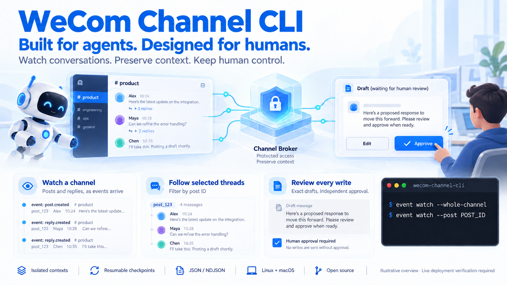

wecom-channel-cli
Built for agents. Designed for humans.

An agent-facing connector for WeCom's grayscale channel APIs. It reads channel content, watches changes by polling or encrypted callbacks, and lets an agent propose text posts, replies or native emoji reactions for independent operator approval.
Status: 0.1.0 release candidate, tested offline against synthetic services and WeCom's published cryptographic vector. Live authentication, discovery, whole-channel and thread polling, filtering and checkpoint resume passed in one test tenant. Distinct-user isolation passed in a synthetic Linux container; actual production deployment and live sending remain unverified. Linux and macOS are supported. No package or remote repository has been published by this work.
The CLI is a client of a small credential-holding broker. The agent gets a Unix socket for bounded reads and proposals. A separate private socket approves the exact proposal digest. Credentials, callback keys, policy and the write ledger stay with the broker. This only forms a host security boundary when the agent and operator have separate OS identities and the agent's tools are sandboxed. Read the security and deployment guide before connecting a bot.
Build and inspect
Requires Go 1.25 or newer. From this repository:
make build
bin/wecom-channel-cli --help
bin/wecom-channel-cli auth guide
bin/wecom-channel-cli config example
make lint test e2e docs-check site-check
Inside the fx workspace, go.work uses the local kit. Use GOWORK=off make test
to verify the pinned agent-cli-kit v0.5.0. make cross builds Linux/macOS
amd64/arm64 executables; cross-compilation is not native runtime verification.
Named channel contexts
Each channel is a security context with separate agent/operator sockets, policy, inbox and proposal ledger. Named client contexts use the family config engine. One bot deployment can route its single authenticated callback to up to 32 channel contexts while sharing the token cache. See contexts.
wecom-channel-cli config set-context engineering \
--socket /run/wecom-channel/engineering-agent/agent.sock \
--bot-id BOT_ID --channel CHANNEL_ID
wecom-channel-cli config get-contexts
wecom-channel-cli --use-context engineering event list
Context names select connections; OS permissions and broker identity checks enforce access. A worker with permission to open every context socket can access every such context. Provision separate context groups for mutually untrusted workers.
Operator setup
-
Provision the broker and agent identities using the deployment guide.
-
Copy the single-context policy or multi-context deployment to an operator-controlled file. Replace the bot/channel/user IDs with verified IDs. Empty channel and sender lists deny mention-triggered requests. For callback-free watching, start with the polling policy, which explicitly enables read_all and observe_all. Keep
read_only: trueduring setup. -
Supply the existing bot Secret to the broker's environment as
WECOM_CHANNEL_BOT_SECRET. For callbacks, also supplyWECOM_CHANNEL_CALLBACK_TOKENandWECOM_CHANNEL_ENCODING_AES_KEY. Never supply these to the agent or put them in argv, source control or chat. -
Preview and run the broker:
wecom-channel-cli config validate --file /etc/wecom-channel/broker.json wecom-channel-cli broker serve --config /etc/wecom-channel/broker.json --dry-run wecom-channel-cli broker serve --config /etc/wecom-channel/broker.json -
Use the private socket for
auth check,channel listandmember listto discover IDs. The operator can list joined channels with an empty allowlist; member/content reads require the channel to be listed in policy. Restart the broker after deliberate policy edits. The broker does not configure WeCom. -
Polling watches work with an empty
callback_listen; no public address or callback keys are required. For optional callback events, expose only the loopback/callbackendpoint through your HTTPS reverse proxy and configure WeCom deliberately. Changing the bot's connection mode invalidates its previous connection. Do not change an existing working bot merely to try this CLI.
auth status and doctor check local readiness. Only auth check makes a
bounded authenticated request, and it requires the private operator socket.
Authentication success does not establish every channel's grayscale permissions.
Agent usage
The operator supplies WECOM_CHANNEL_SOCKET=/run/wecom-channel-agent/agent.sock.
No credential belongs in the agent environment. Load the bundled Skill with
skill show, or install it with skill install --agent codex after previewing
with --dry-run. A differing existing Skill requires --overwrite.
wecom-channel-cli channel list
wecom-channel-cli event list --limit 10
wecom-channel-cli event get --id EVENT_ID
wecom-channel-cli event context --id EVENT_ID
# These require read_all for the channel.
wecom-channel-cli post list --channel CHANNEL_ID --limit 20
wecom-channel-cli reply list --channel CHANNEL_ID --post POST_ID
wecom-channel-cli search start --channel CHANNEL_ID --keyword incident
wecom-channel-cli search result --channel CHANNEL_ID --job JOB_ID
Do not invent IDs. Events provide exact channel/post/reply targets. A mention's context reads the post and, when present, the precise triggering reply; it does not grant general channel browsing. Mention-only access expires after 24 hours.
Each admitted event has a durable data.sequence. An explicitly requested
consumer can keep its last processed sequence and use
event list --after-sequence N; late callbacks are ordered by admission, not
their remote creation timestamp. Keep checkpoints with the bot identity and
preserve the broker ledger. This does not start monitoring automatically.
An ahead-of-ledger checkpoint or a missing retained sequence returns a conflict,
so a consumer does not silently treat lost history as an empty inbox.
Lists use {items,next,has_more}. Pass next as --cursor with the same
query. NDJSON emits items on stdout and a pagination notice on stderr. Preserve
both streams. Time windows use --since or [--from,--to) with RFC 3339
offsets. The resolved bounds are emitted on stderr; use those absolute bounds
when paging. There is no implicit unbounded traversal or monitoring loop.
Every external item retains trust, warning, source, and data. Output is
JSON or NDJSON only. Attachment names/counts are available, but download URLs,
cookies and arbitrary upstream fields are removed. Treat names, text and file
names as untrusted even when the sender is allowlisted.
Watch a channel or selected threads
wecom-channel-cli --use-context engineering event watch \
--whole-channel --duration 10m --max-events 500
wecom-channel-cli --use-context engineering event watch \
--post POST_ID --duration 10m --checkpoint .watch/thread.json
Create the checkpoint directory first. The operator must enable read_all,
observe_all, and post/reply observations for polling. The default backend polls
when no callback listener is configured, with a 30-second minimum refresh interval.
The first snapshot establishes a quiet baseline; later changes become untrusted,
observation-only metadata. Polling cannot reconstruct every intermediate edit or
infer deletion from absence. Mentions remain restricted to authenticated callbacks
from authorized humans. Watches stop on explicit limits. Resume files
bind the context, policy, ledger and thread filters; they never skip a detected
history gap. See watching for setup, partial coverage and
checkpoint delivery limits.
Propose, review, send
A proposal has no remote effect. Use a stable idempotency key and reuse it if a local response is lost. The broker binds that key to the immutable proposal; changing its text or target under the same key fails.
wecom-channel-cli reply propose \
--channel CHANNEL_ID --post POST_ID --parent-reply REPLY_ID \
--event EVENT_ID --key REQUEST_KEY --stdin --dry-run < draft.txt
wecom-channel-cli reply propose \
--channel CHANNEL_ID --post POST_ID --parent-reply REPLY_ID \
--event EVENT_ID --key REQUEST_KEY --stdin < draft.txt
wecom-channel-cli proposal get --id PROPOSAL_ID
Omit --parent-reply when the mention is in the post itself. The target must
match the authenticated event exactly. With read_all and allow_replies, the
operator may permit proposals without a mention. post propose requires
allow_posts. All of these still require independent approval.
The trusted operator reviews the entire proposal, including destination, text, expiry and digest, outside the agent session, then runs:
wecom-channel-cli --socket /run/wecom-channel-admin/admin.sock approval list
wecom-channel-cli --socket /run/wecom-channel-admin/admin.sock proposal get --id PROPOSAL_ID
wecom-channel-cli --socket /run/wecom-channel-admin/admin.sock approval approve \
--id PROPOSAL_ID --digest REVIEWED_DIGEST --yes --dry-run
wecom-channel-cli --socket /run/wecom-channel-admin/admin.sock approval approve \
--id PROPOSAL_ID --digest REVIEWED_DIGEST --yes
Live sending also requires operator policy read_only: false. The agent's
--allow-writes only overrides its own WECOM_CHANNEL_CLI_READ_ONLY; it cannot
override broker policy, route to the operator interface, or grant approval.
The ledger records sending before network I/O. A failed response becomes
uncertain; a crash can leave sending. Both block re-execution, as does sent.
The operator reconciles with WeCom before using approval resolve --outcome sent --remote-id ID or --outcome not_sent, with the same ID/digest and --yes.
Resolution does not resend. See write recovery.
Native emoji reactions
wecom-channel-cli reaction types
wecom-channel-cli --use-context engineering reaction list --post POST_ID
wecom-channel-cli --use-context engineering reaction propose \
--post POST_ID --emoji-type 1 --action add --key acknowledge-1 --dry-run
Reactions call WeCom's native post_emoji; they do not create emoji-text posts
or comments. Add --reply REPLY_ID for a reply target, or use --action remove
to cancel the bot's reaction. Proposals require operator approval like other writes.
The operator must enable allow_reactions; the default mentioned scope requires
an exact authenticated mention within 24 hours. Explicit reaction_scope: channel
also requires read_all and proactive bot permission, allowing polling deployments
without callbacks. See native reactions for setup, type discovery
and uncertain-result reconciliation. No separate reaction ID is invented.
Official CLI compatibility
Research checked 2026-10-25 against official commit
55785fa.
The official CLI and channels use the same SHA-256 signing formula, but the
official CLI's get_cli_config gateway Bearer token and the channel
get_token access token are different documented contracts. We do not decrypt
its private credential store, import its token, or copy its Rust authentication
implementation. An operator may provision the same existing bot ID/Secret when
that bot is eligible, but separate token endpoints do not establish that token
issuance and refresh cannot affect another integration.
If wecom-cli is already in use, keep its login and bot configuration intact.
For first live verification, use a dedicated eligible test bot in a test channel.
Supply its credentials locally to the broker; do not reset a working bot's Secret
or rerun the official CLI's login to obtain credentials for this connector.
An existing CLI login does not establish channel API access. Polling watches need
no callback reconfiguration. See the coexistence guidance.
Scope and verification
Implemented: bounded channel/thread watches, channel/member discovery, post/reply reads, scoped search, encrypted URL verification and event intake, exact sender/channel allowlists, bounded inbox reads, text/Markdown proposals, independent approvals and durable uncertain-write recovery, and native reaction add/remove/read operations. Tests exercise the CLI process and both socket roles. Live native reactions remain unverified.
Not implemented: media upload/download, content edits/deletes, forwarded chat-record expansion, bot reconfiguration, channel long connections, automatic model execution, or a sandbox for an arbitrary agent runtime. Limits and rationale are in the design. The CLI is not a prompt-injection detector and cannot make a privileged host agent safe by itself.